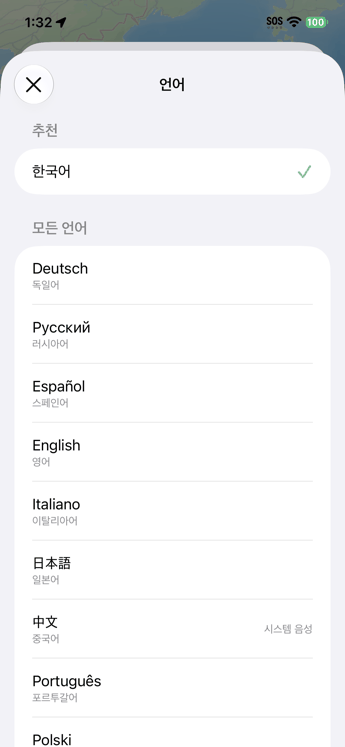

CityYoYo, 이제 11개 언어로 말합니다
AI(Claude Code)의 도움을 받아 작성했고 창업자가 검토했습니다.
CityYoYo는 영어로 시작해 중국어, 한국어, 스페인어, 포르투갈어, 프랑스어를 차례로 추가했습니다. 3.18 버전에서는 독일어, 이탈리아어, 일본어, 러시아어, 폴란드어 다섯 개 언어가 더해집니다. 듣는 해설은 물론 앱의 모든 화면에 적용됩니다.
- English
- 中文
- 한국어
- Español
- Português
- Français
- Deutsch
- Italiano
- 日本語
- Русский
- Polski
왜 이 다섯 개 언어인가
이미 앱을 쓰고 있는 사람들을 보고 골랐습니다. 휴대폰을 독일어, 이탈리아어, 일본어, 러시아어, 폴란드어로 설정한 여행자들이 CityYoYo와 ChinaWalk를 열고는 영어로 듣고 있었습니다. 러시아어는 특히 중국 여행자를 위한 앱인 ChinaWalk에서 많이 보였습니다. 가장 큰 빈자리였기에 먼저 채웠습니다.
해설만이 아니라 앱 전체가
Italiano를 고르면 방금 탭한 골목의 이야기가 이탈리아어로 흘러나옵니다. 버튼, 설정, 투어 모드 안내, 도시 목록도 모두 이탈리아어로 바뀝니다. 지도 위 장소명도 해설 언어를 따릅니다. 휴대폰은 한국어인데 도쿄 이야기를 일본어로 듣고 싶다면, 핀 아래 이름도 함께 일본어로 바뀝니다.

처음부터 내 언어로
새로 설치하면 휴대폰 언어가 11개 중 하나일 경우 그 언어로, 아니면 영어로 시작합니다. 설정을 뒤질 필요가 없습니다. 이미 CityYoYo를 쓰고 있다면 다른 언어를 고르기 전까지는 아무것도 바뀌지 않습니다. 선택 화면은 각 언어를 고유 이름으로 보여 주고, 맨 위에 휴대폰 언어를 추천합니다.
iPhone에서 더 좋아진 음성
iPhone에서는 CityYoYo의 고품질 AI 음성이 기기에서 직접 동작하며, 이제 앱에 기본으로 포함되어 첫 투어 전에 음성을 따로 내려받을 필요가 없습니다. 이 음성은 중국어를 제외한 모든 언어를 지원하며, 중국어는 당분간 시스템 음성을 사용합니다. 일본어 해설을 문장 단위로 나누는 방식도 고쳐서 긴 구절이 한꺼번에 이어지지 않습니다.
ChinaWalk도 함께
ChinaWalk도 같은 11개 언어를 지원합니다. 베이징이나 시안을 찾는 여행자라면 중국어 장소명과 그 뒤의 이야기를 이제 독일어, 이탈리아어, 일본어, 러시아어, 폴란드어로도 들을 수 있습니다. 물론 VPN 없이 작동합니다.
App Store나 Google Play에서 3.18로 업데이트한 뒤 설정에서 언어를 고르세요. 아직 없는 언어로 CityYoYo를 쓰고 싶다면 App Store나 Google Play 리뷰로 알려 주세요. 다음 언어를 고를 때 참고하겠습니다.
늘 같은 생각입니다. 어디서든 아무 장소나 탭하면 그곳의 이야기를 들을 수 있도록. 이제 더 많은 언어로.
무료로 다운로드하세요.